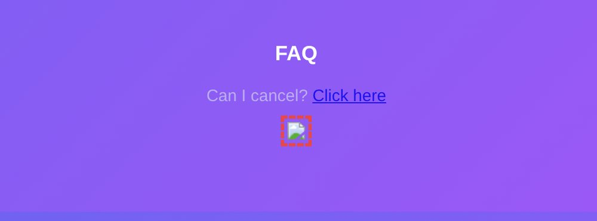
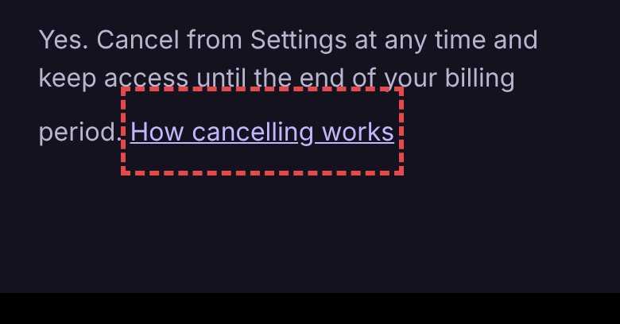

The image nobody checked
Every image loads, and either says what it shows or is marked as decoration.


The number
- Before
- 3 failuresfrom one tag: broken image · failed request · image without alt
- After
- 0 failuresimage removed; 0 failed requests
Why it happened. <img src="team.png"> pointed to a file that was never created. AI often writes image tags for pictures it cannot make.
The fix
<!-- keep it only if the file exists and it helps -->
<img src="team.jpg" width="640" height="360"
alt="The four-person support team at their desks">
<!-- decoration: alt="" -->Check your own page
Open the browser console and the Network tab, reload and filter by failed requests. Then list images without alt: document.querySelectorAll('img:not([alt])')
Where these numbers come from. One pricing page an AI tool built from a single prompt, measured in Chromium at 1440 × 900 and 390 × 844 on 24 November 2026, before and after fixing exactly what the checks reported (38 → 66 of 66). Both pages are public.
Before pageAfter pageGuide: The screen states designers forget